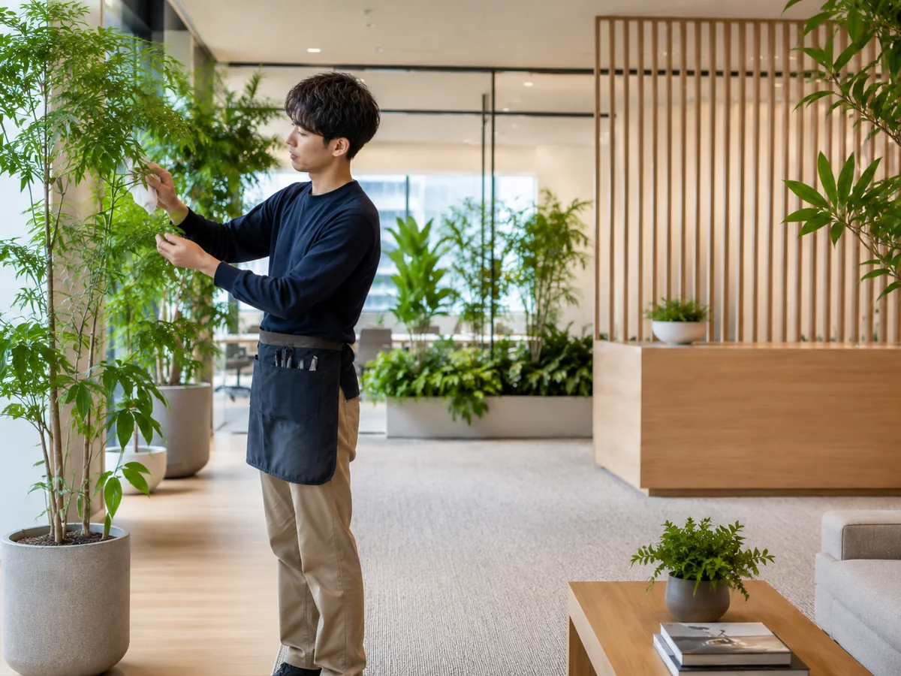
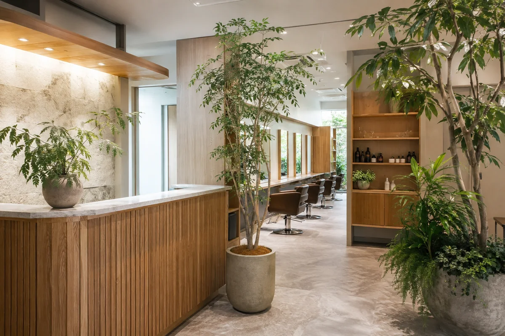
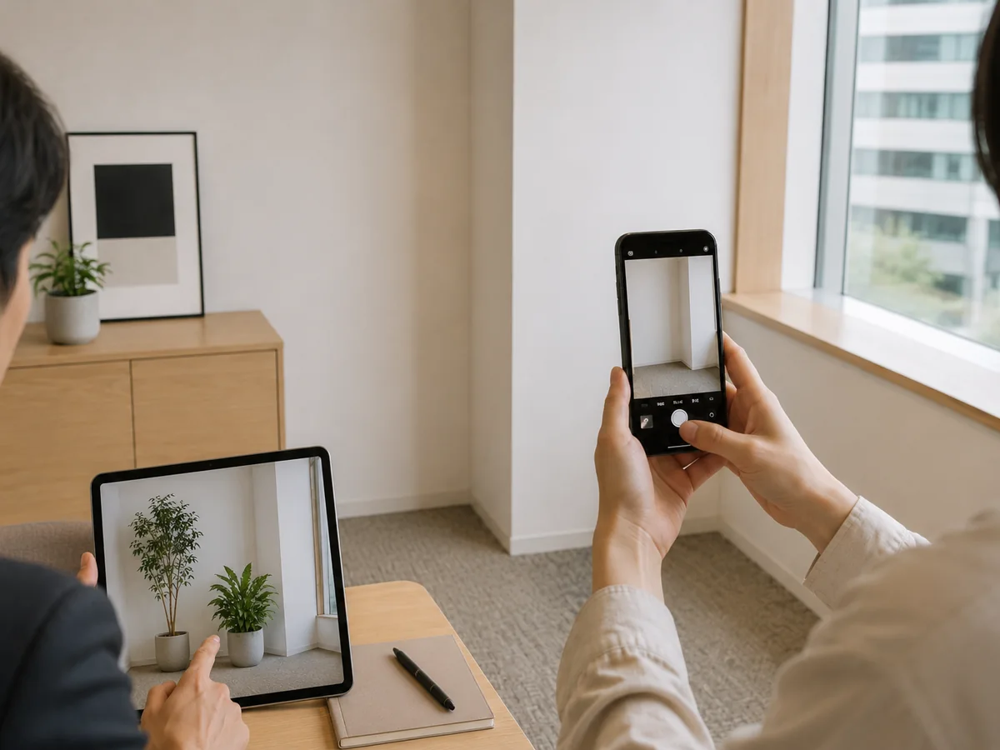
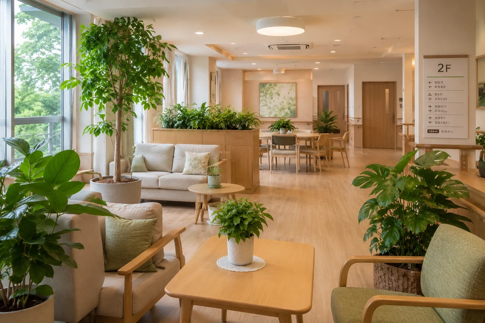

福岡県糟屋郡粕屋町の観葉植物レンタル店
空間に、
やすらぎと品格を。
オフィス・店舗・クリニック・福祉施設へ。観葉植物レンタルから定期メンテナンスまで、空間に合わせて丁寧にご提案します。
レンタル月額制で手軽に導入
込み専門スタッフが管理
ご提案植物と配置を選定
簡単相談設置場所を送るだけ
こんなお悩みに、グリーンでお応えします
- オフィスを明るい雰囲気にしたい
- 植物の管理に手間をかけたくない
- 初期費用を抑えて導入したい
- どんな植物が合うか相談したい
- 定期的に入れ替えて印象を整えたい
ご相談の流れ
はじめてでも、相談はシンプルです
写真を送る・お問い合わせ
設置したい場所の写真や、ご希望の雰囲気・お悩みをお送りください。
ご提案・お見積り
空間に合う植物や鉢、サイズ感、設置イメージを分かりやすくご案内します。
設置・定期メンテナンス開始
導入後も専門スタッフが定期訪問し、給水・清掃・剪定などを行います。
サービス内容
選定から設置、日々の管理までまとめて対応



写真で簡単相談
設置場所の写真から、植物の大きさや配置を相談できます。
掲載写真は設置イメージです。空間やご希望に合わせて、植物の種類・サイズ・配置をご提案します。
導入イメージ
さまざまな空間に、自然なグリーンを
オフィス受付・執務スペース
クリニック待合室・受付
サロン・店舗入口・接客スペース

福祉施設共用部・ラウンジ
エントランス印象を整える植栽
FUKUOKA KASUYA SHOP
グリーン・ポケット福岡粕屋店
店舗責任者 西津 佳宏 店長
植物のある快適で癒しのある空間づくりを、心を込めて手入れした植物と丁寧なサービスでお手伝いします。
店舗情報・営業時間は変更になる場合があります。
- 所在地
- 〒811-2307
福岡県糟屋郡粕屋町原町4-3-5 八昭ビル1階 - 電話番号
- 092-719-0336
- FAX
- 092-719-0338
- 問合せ受付時間
- 09:00～17:30
- 定休日
- 土日祝日・GW・年末年始
FREE CONSULTATION